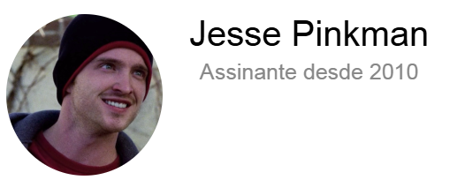

★★★★★
Gosto de assistir ao clipe com a letra ao lado: dá para acompanhar cada verso sem pausar o vídeo. Só sinto falta de mais músicas no catálogo.
No musiletras, o clipe toca de um lado e a letra da música aparece do outro.
Abrir a página de uma música
★★★★★
Gosto de assistir ao clipe com a letra ao lado: dá para acompanhar cada verso sem pausar o vídeo. Só sinto falta de mais músicas no catálogo.

★★★★★
A tradução em um clique é o que eu mais uso. Troco entre a letra original e o português sem sair da página.
★★★★★
Site limpo, rápido e fácil de navegar. Do jeito que uma página de letras deveria ser.
1 de 3